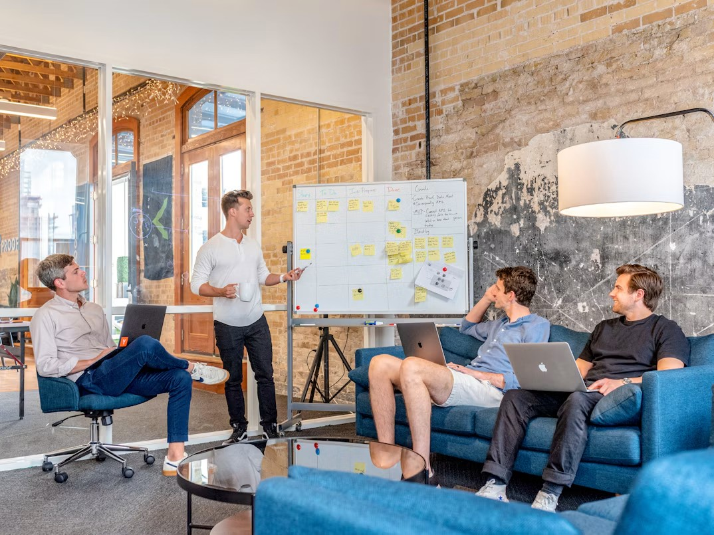
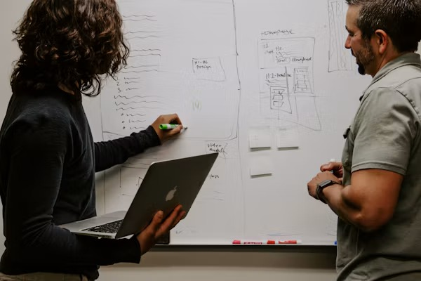

Serviços
Consultoria estratégica em sete frentes.
Cada frente tem escopos definidos, prazo por etapa e professor orientador. Escolha a que conversa com o seu desafio e veja exatamente o que entregamos.
Plano de negócios
Para tirar uma ideia do papel ou decidir uma expansão com número na mão.
Plano de negócios completo
O documento que organiza a empresa no papel: mercado, oferta, operação e projeção financeira. Serve para decidir com clareza e para apresentar a sócios e investidores.
Validação da dor e do modelo de negócio
Testamos com clientes reais se o problema existe e se eles pagariam pela solução, antes de você investir pesado nela.
Plano GTM (ICP, posicionamento e canais)
GTM (go-to-market) é o plano de chegada ao mercado. Define o cliente ideal (ICP), a mensagem que diferencia você e os canais para alcançá-lo.
Planejamento estratégico e OKRs
Define para onde a empresa vai e o que priorizar. OKRs são objetivos com resultados mensuráveis, que traduzem a estratégia em metas da equipe.
Plano de expansão
Avalia como crescer com segurança: abrir unidades, entrar em novas regiões ou lançar novas linhas, com os investimentos e riscos de cada caminho.
Pitch de vendas
Uma apresentação curta e convincente da sua oferta, focada no problema do cliente, para a equipe comercial usar nas negociações.
Pitch de investimento
A apresentação para investidores: oportunidade, modelo de negócio, números e o que será feito com o aporte.

Análise mercadológica
Para saber onde você compete, contra quem e para quem vende.
Dimensionamento de mercado (TAM/SAM/SOM)
Estima o tamanho da oportunidade em três níveis: o mercado total (TAM), a parte que você consegue atender (SAM) e a fatia realista de conquistar (SOM).
Pesquisa secundária (desk research)
Levantamento de dados que já existem, como estudos setoriais, estatísticas públicas e relatórios, para entender o mercado sem começar do zero.
Análise PESTEL
Examina fatores externos que afetam o negócio: Políticos, Econômicos, Sociais, Tecnológicos, Ecológicos e Legais.
Análise das 5 Forças de Porter
Mede a pressão competitiva do setor: rivais, novos entrantes, substitutos e o poder de negociação de clientes e fornecedores.
Análise SWOT
Cruza forças e fraquezas internas com oportunidades e ameaças externas, para mostrar onde atacar e onde se proteger.
Mapeamento e benchmarking de concorrentes
Identifica quem disputa o seu cliente e compara oferta, preço e posicionamento, revelando o que aprender e onde se diferenciar.
Estudo de localização (ponto comercial)
Compara endereços por fluxo de pessoas, perfil da região, concorrência e custo, para reduzir o risco de escolher o ponto errado.
Análise do consumidor
Para entender quem compra de você, por que compra e por que deixa de comprar.
Pesquisa de perfil e comportamento do consumidor
Descobre quem compra de você, o que essa pessoa valoriza e como decide, com base em entrevistas e questionários.
Pesquisa de satisfação e NPS
Mede o quanto os clientes estão satisfeitos. O NPS indica, em uma nota de 0 a 10, a disposição deles de recomendar a empresa.
Jornada do cliente e pontos de atrito
Mapeia cada etapa da experiência, do primeiro contato ao pós-venda, e aponta onde o cliente trava, se frustra ou desiste.
Cliente oculto
Um avaliador se passa por cliente comum e registra como foi o atendimento, mostrando o que acontece de verdade na ponta.
Estratégia de fidelização e retenção
Ações para que quem já comprou volte a comprar, como programas de relacionamento, pós-venda e ofertas de recompra.
Marketing
Para fortalecer o posicionamento da marca e transformar visibilidade em vendas.
Avaliação de imagem e reputação da marca
Investiga como clientes e mercado enxergam a sua marca hoje, comparando essa percepção com a imagem que você quer transmitir.
Branding e identidade de marca
Define o que a marca representa e como ela se expressa: propósito, posicionamento, tom de voz e elementos visuais.
Plano de marketing (objetivos, ações e orçamento)
Organiza o que fazer, quando e com quanto dinheiro, ligando cada ação de marketing a um objetivo do negócio.
Estratégia de redes sociais e conteúdo
Define em quais redes estar, sobre o que falar e com que frequência, para atrair o público certo com coerência.
Marketing digital e tráfego pago
Estrutura a presença online e os anúncios pagos, como Google e Meta, para gerar visitas e contatos de forma mensurável.
Funil de vendas e estruturação comercial
Organiza as etapas entre o primeiro contato e o fechamento, com rotinas e indicadores para a equipe vender de forma previsível.
Análise de portfólio (Matriz BCG)
Classifica produtos por crescimento do mercado e participação em quatro grupos (estrela, vaca leiteira, interrogação e abacaxi), para decidir onde investir.
KPIs de marketing
Os indicadores que mostram se o marketing dá resultado, como custo por cliente, conversão e retorno sobre o investimento.
Financeiro
Para saber para onde vai o dinheiro e quanto cobrar.
Valuation
Estima quanto a empresa vale com métodos financeiros. É útil em uma venda, na entrada de sócios ou na captação de investimento.
Análise de viabilidade de projetos
Projeta custos e retornos de uma ideia para responder se ela compensa, usando indicadores como VPL, TIR e payback.
Análise de balanço e DRE
Lê as demonstrações contábeis para traduzir a saúde da empresa. O balanço mostra o patrimônio, e a DRE mostra receitas, despesas e lucro.
KPIs financeiros
Os indicadores que acompanham a saúde financeira, como margem, liquidez, endividamento e rentabilidade.
Precificação de produtos e serviços
Define preços com base em custos, margem desejada, concorrência e valor percebido, para vender sem perder dinheiro.
Fluxo de caixa e capital de giro
Organiza entradas e saídas para prever falta de caixa e calcula quanto dinheiro a operação precisa para rodar no dia a dia.
Planejamento orçamentário
Define quanto a empresa pretende receber e gastar no período, por área, e acompanha o previsto contra o realizado.
Análise e redução de custos
Detalha para onde o dinheiro está indo e identifica o que cortar ou renegociar sem prejudicar a operação.

Operações
Para a operação que cresceu mais rápido que os processos.
Mapeamento de processos e análise de gargalos
Desenha como o trabalho acontece de fato, passo a passo, para encontrar onde ele trava, atrasa ou se repete à toa.
Padronização de processos (POPs e manuais)
Registra a melhor forma de fazer cada tarefa. POP é o Procedimento Operacional Padrão, que mantém a qualidade seja quem for a pessoa executando.
Implementação de gestão ágil
Organiza o trabalho em ciclos curtos, com prioridades claras e reuniões rápidas, usando métodos como Scrum e Kanban.
KPIs operacionais
Os indicadores do dia a dia da operação, como produtividade, prazo de entrega, retrabalho e qualidade.
Estrutura organizacional e cargos
Define áreas, hierarquia e responsabilidades de cada função, para que todos saibam quem decide e quem faz o quê.
IA
Para usar inteligência artificial onde ela resolve um problema real, e não por modismo.
Diagnóstico de oportunidades de IA
Analisa a operação para identificar onde a IA traz ganho real e onde ela não é a ferramenta certa.
Criação de assistentes virtuais (chatbots)
Assistentes que conversam com clientes ou com a equipe, respondendo dúvidas comuns com base nas informações da empresa.
Criação de agentes de IA
Diferente de um chatbot, que só responde, um agente de IA executa tarefas em várias etapas, usando as ferramentas da empresa.
Criação de skills
Skills são instruções reutilizáveis que ensinam a IA a fazer uma tarefa do jeito da sua empresa, sempre com o mesmo padrão.
Automação de workflows
Conecta sistemas para que tarefas repetitivas, como copiar dados ou enviar avisos, aconteçam sozinhas, com menos erro manual.
Criação de sites e landing pages
Sites institucionais e páginas focadas em uma única oferta ou ação, feitos para apresentar a empresa e captar contatos.
Dashboards e relatórios automatizados
Painéis que reúnem os números do negócio em um só lugar e se atualizam sozinhos, sem planilhas manuais.
Treinamento de equipes em IA
Capacita o time a usar IA nas próprias tarefas, com exemplos práticos e cuidados com qualidade e dados.
Conversa de diagnóstico
Não sabe por qual frente começar?
Conte o que está acontecendo na empresa. Na conversa de diagnóstico, mostramos qual frente faz sentido para o seu desafio.
Agendar diagnóstico